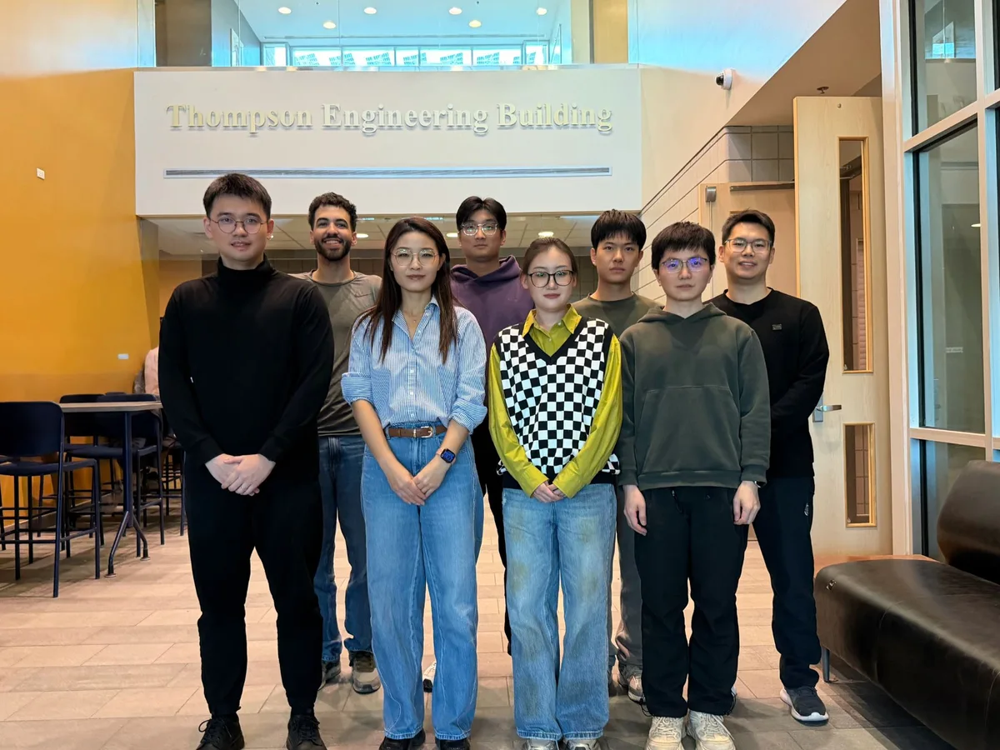
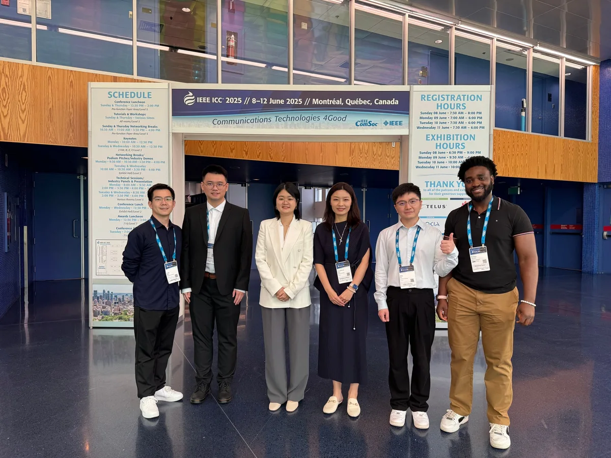
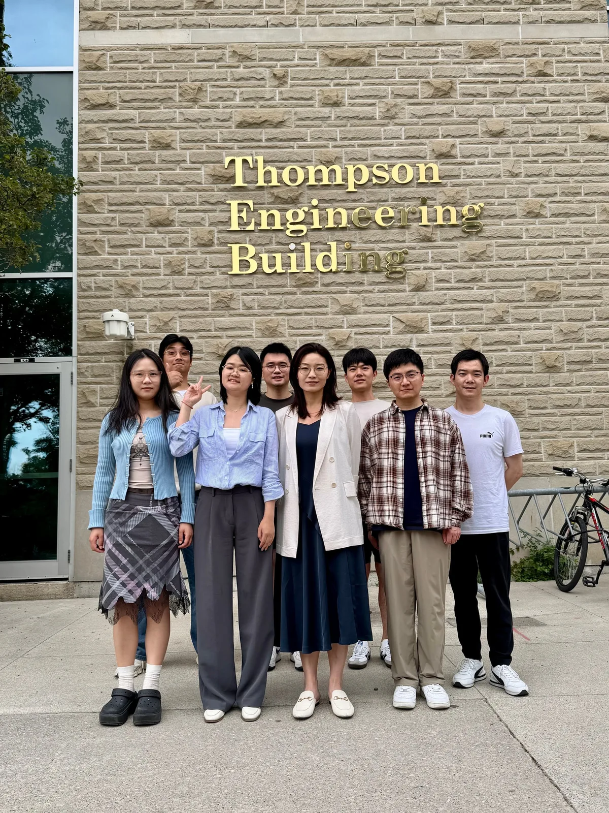
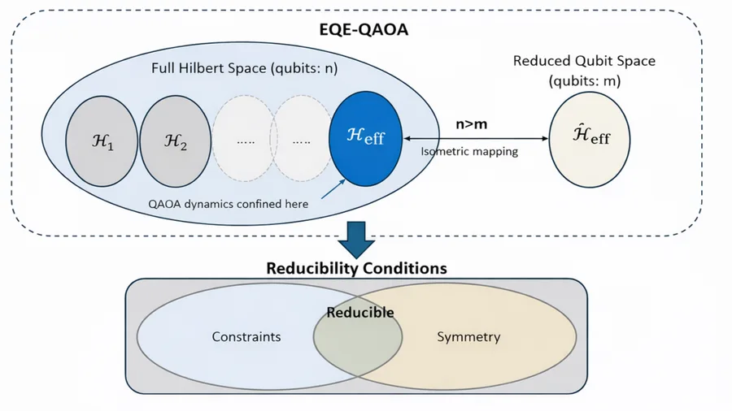

1
Foundations
A qubit is a unit vector in ℂ²
States, the Born rule, the Bloch sphere, single-qubit gates.
60 minutesOpen lecture 1
Eight one-hour lectures for mathematics undergraduates at Western University. We start from a single qubit and reach Shor's algorithm, QAOA and quantum error correction.
Each part needs only the ones before it. Pick one to see what it covers.
We replace probability vectors with complex amplitudes and stochastic matrices with unitaries. Entanglement appears as soon as there are two qubits.
Grover's search is a rotation in a two-dimensional plane. Shor's factoring is Fourier analysis on a cyclic group. Both fit on one blackboard once the linear algebra is in place.
MaxCut becomes the question of finding the lowest eigenvalue of a diagonal matrix. QAOA searches for it with a short parametrised circuit and a classical optimiser. This is the part closest to the lab's own research.
A stabilizer code is the joint +1 eigenspace of an abelian subgroup of the Pauli group. We build up from the three-qubit repetition code to the surface code.
Each comes with notes, a simulation and exercises. Lectures 1 and 2 are ready; the others follow as the workshop runs.
States, the Born rule, the Bloch sphere, single-qubit gates.
Tensor products, Bell states, no-cloning, teleportation.
Oracles, phase kickback, search as a rotation in a plane.
Fourier analysis on ℤN, phase estimation, order finding.
Observables, the variational principle, MaxCut as an Ising model.
Cost and mixer layers, adiabatic evolution, what limits it.
Pauli errors, the repetition code, syndromes, Shor's nine-qubit code.
Abelian subgroups of the Pauli group, CSS codes, thresholds.
Less than you might expect.
Complex vectors and matrices, inner products, eigenvalues and eigenvectors.
Enough to run and edit a notebook. The simulations on this site need no code at all.
Everything is built from the mathematics. Some group theory helps in the last two lectures.
Quantum and AI for Computing, Optimization, and Networking, led by Dr. Fang (Fiona) Fang, Assistant Professor in Electrical & Computer Engineering and in Computer Science at Western University.
The lab builds optimisation and learning methods for networked systems, and studies quantum optimisation that needs fewer qubits. The workshop is how we share the quantum side of that work with undergraduates.




When a combinatorial problem has symmetry, QAOA never leaves a small invariant subspace. The lab's framework maps that subspace onto fewer qubits, so the same optimisation runs on a smaller device. Lectures 5 and 6 give you the background to read this work.
Talk to Dr. Fang. If the workshop makes you want to go further, whether a summer project, a thesis or graduate study, send an email. Say what you have studied and what caught your interest. The lab is recruiting Ph.D. students.